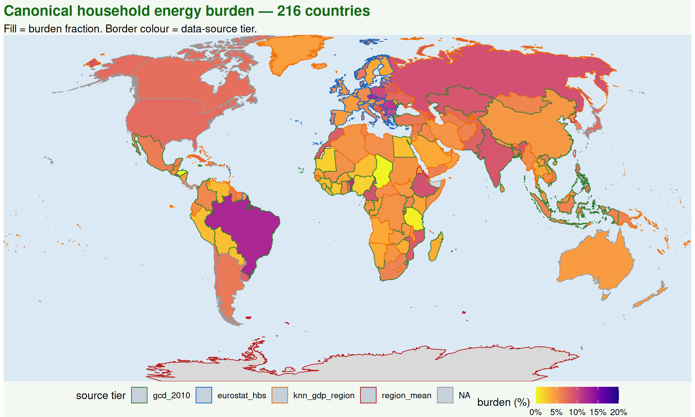
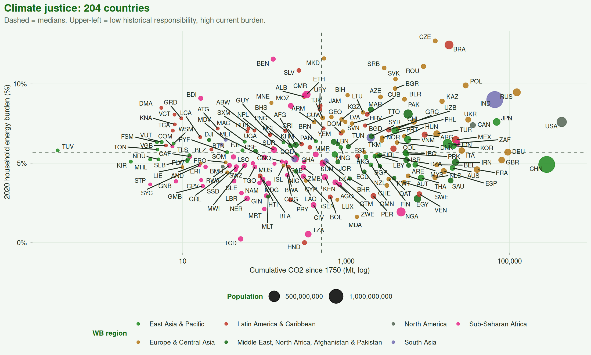

Every figure below is generated at page-render time from the
open-source emburdensynth pipeline’s parquet outputs. All
raw code + data at github.com/ericscheier/emburdensynth.
Household energy burden by country, using the 4-tier fallback chain (GCD survey → Eurostat HBS → k-nearest-neighbour imputation by GDP within region → region mean). Border color encodes data-source tier.

Cumulative CO2 since 1750 (log-x) versus 2020 household energy burden (%). Countries in the upper-left quadrant carry the lowest historical responsibility yet the highest current burden.

The full 80-page technical report has 39 figures covering:
Cell-level burden, canonical burden, physics-required kWh, energy-limiting share, income, embodied CO2, Sub-Saharan Africa focus, South Asia focus.
PCA biplot, hierarchical correlation matrix, k-means archetype map, elastic-net regression.
NASA GISTEMP temperature anomalies, OWID CO2 per fuel, WB WDI 1960, UNDP HDI 1990, Ember decarbonization.
Eurostat inability-to-warm, Bland-Altman method agreement, physics-vs-empirical suppression, bootstrap CI width map.